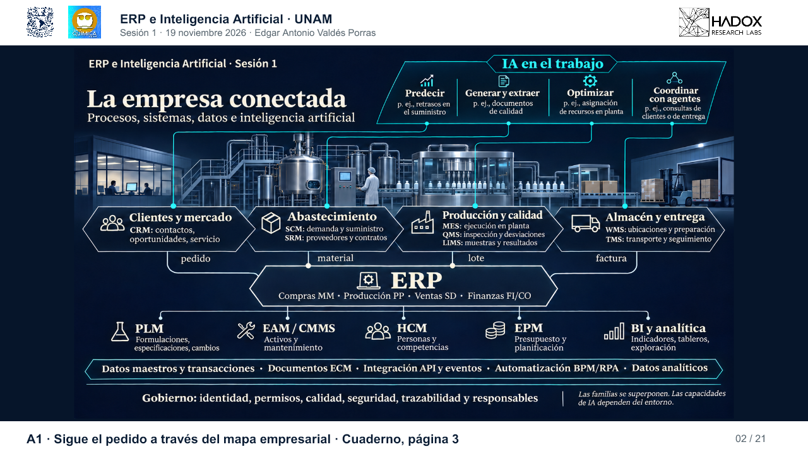

SERIE DE CHARLAS Y TALLERES · 7 SESIONES · 28 HORAS
ERP e Inteligencia Artificial
Cómo se conectan los sistemas de una empresa y qué cambia cuando incorporamos inteligencia artificial.

SESIÓN 1 · MATERIALES DISPONIBLES
La empresa conectada y su transformación con IA
Recorre las láminas, sigue las actividades A1–A7 y consulta los cuatro videos de apoyo. Descarga el cuaderno y la guía SAP para trabajar paso a paso.
Entrar a la sesión 1 →21 láminas · 4 videos · Cuaderno de prácticas · Guía de acceso SAP
Las siete sesiones
Los materiales se incorporarán conforme preparemos cada clase. Por ahora está disponible la sesión 1.
- 0119/11/2026 · 17:00–21:00 CDMXAbrir sesión 1 →
Empresa conectada y preparación de plataformas
- 0224/11/2026 · 17:00–21:00 CDMXMaterial por incorporar
Fundamentos y aplicaciones de inteligencia artificial
- 0325/11/2026 · 17:00–21:00 CDMXMaterial por incorporar
Anatomía y construcción de agentes
- 0426/11/2026 · 17:00–21:00 CDMXMaterial por incorporar
Prompts, contexto, grounding y orquestación
- 0501/12/2026 · 17:00–21:00 CDMXMaterial por incorporar
Laboratorio de solución empresarial
- 0602/12/2026 · 17:00–21:00 CDMXMaterial por incorporar
Gobierno, evaluación y supervisión
- 0703/12/2026 · 17:00–21:00 CDMXMaterial por incorporar
Reto de operación y prueba cruzada
Si cursas el diplomado
Las entregas y el examen se realizan en el Moodle institucional. Aquí puedes consultar los materiales y seguir los recorridos.
Entrar al Moodle del módulo VII ↗